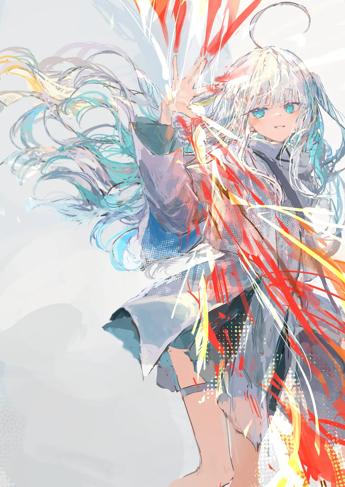
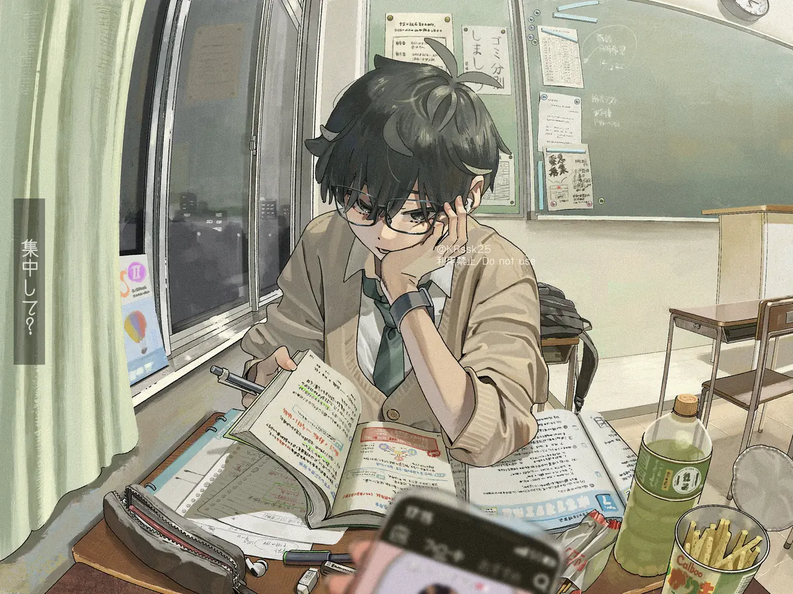
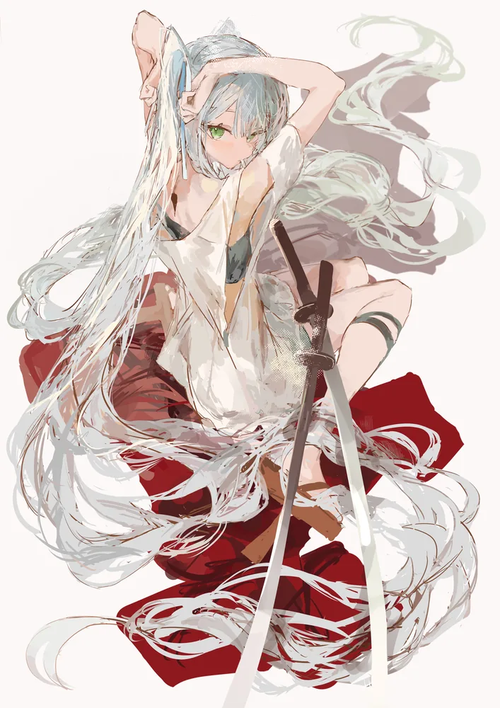
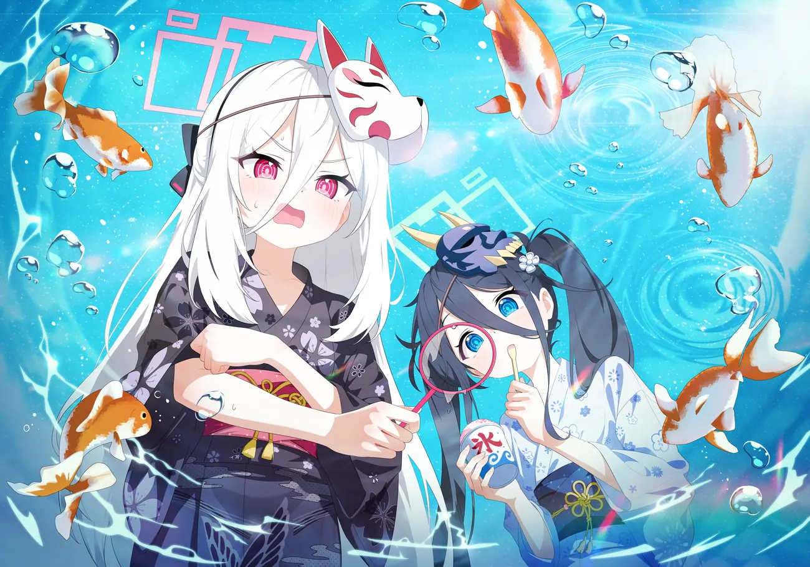
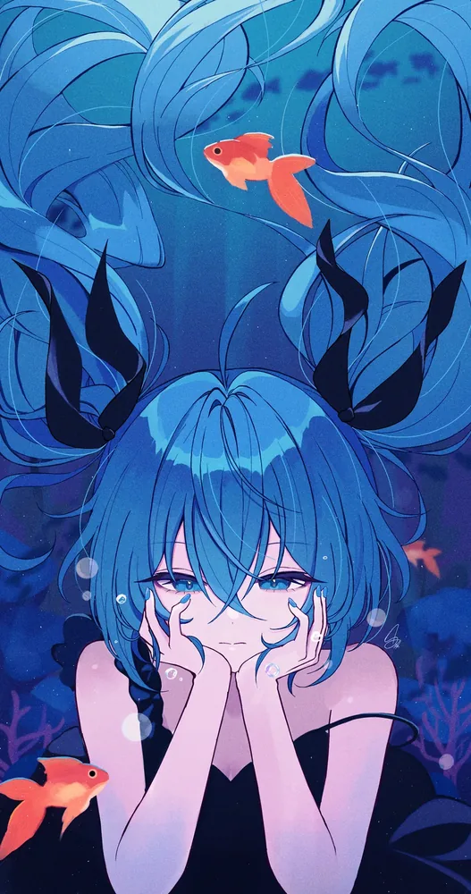
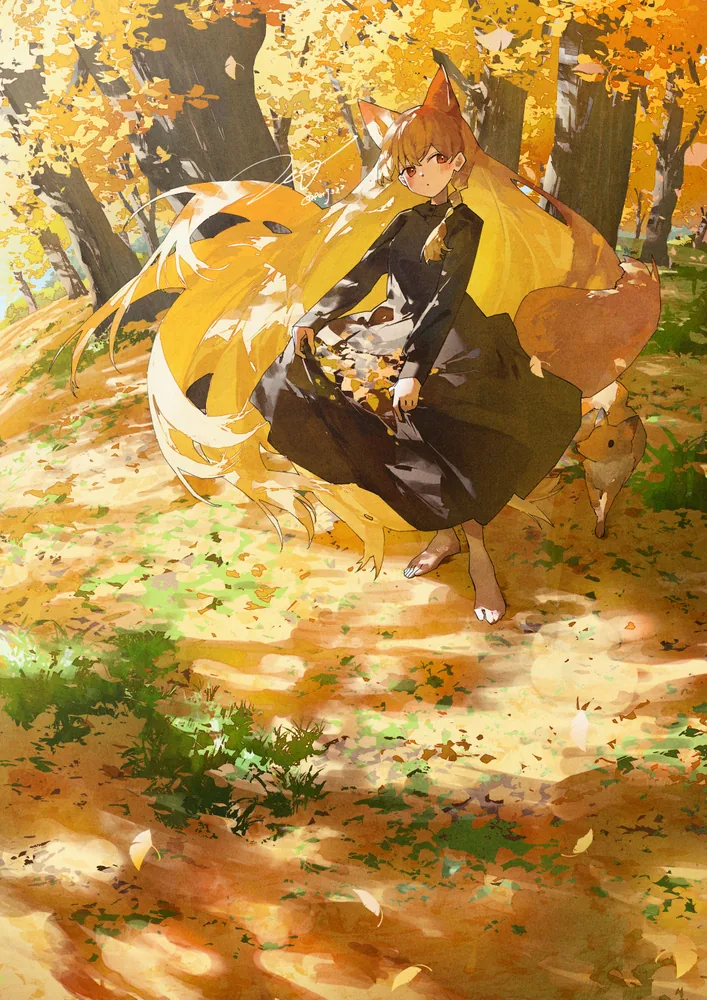

先说一件小事
上课铃响之前，教室里总是很热闹。
有人演困，有人演不在乎，有人在借橡皮顺便听八卦。
只有一个人演不了。他坐得笔直，手心全是汗。
这个画面没人会记得，他自己第二天也忘。
我们这学期干的事，就是把这些没人记得的瞬间，一个一个捡回来。
放学后，我在空教室里坐了很久
主诉 · 所有人都走光之后
下课铃一响，教室像被抽走了空气。人走得比退潮还快。
你没动。书包拉链拉开一半，停在那儿。
不是不想走。是突然特别想坐一会儿——坐到一个没人会问你“怎么还不走”的时候。
窗外的光慢慢斜进来，把桌子照成暖黄色。坐够了才发觉，肩膀一直是耸着的，这会儿才放下来。
有些时候我们需要的不是有人陪，是没人打扰。

考砸一次，你给自己判了几年
主诉 · 卷子发下来之后
卷子发下来，第一眼看分数。
然后你做了个极其熟练的动作：折起来，塞进书包最底层，快得像在藏赃物。
紧接着那句话就来了——“我果然不行”。
它来得比任何解题思路都快，比你任何一次努力都准时。
真正让你放弃数学的，不是那张卷子，是“努力没用”这个结论。

课间笑得最大声的人，回座位就安静了
主诉 · 课间十分钟
课间十分钟，教室吵成一团。有人讲了个并不好笑的段子，全场都在笑。
你也笑了，笑得比谁都大声，笑到眼睛有点酸。
上课铃一响，你回到座位，突然一句话都不想说。
同桌问你怎么了。你说没事，就是有点累。其实你也说不清哪儿累——就是笑完之后，会空一下。
笑给别人看，是件很耗体力的事。

没听懂的人，其实不止你一个
主诉 · 老师问“听懂了吗”
老师讲完一道大题，抬头问：都听懂了吗？
教室里安静了三秒。没有人举手。
其实你也没全懂。中间那一步，为什么突然变成那样，你没跟上。
你想问。可你抬头扫了一圈，前后左右都低着头，脸上的表情像是懂了。
于是你把话咽了回去，跟着一起点头。
没听懂的人互相看了一眼，都以为对方懂了。

关灯之后，脑子开始加班
主诉 · 凌晨一点
躺下，关灯，手机扣在桌上。
然后你开始复盘今天说过的每一句话。
那句是不是很蠢？他那个表情什么意思？我为什么要笑？
想着想着你摸到手机，想找点东西把脑子填满。于是凌晨一点，你和一部并不好看的剧，一起亮着。
真正的反思有结尾。你这个没有，它是循环播放。

耳机放到一段旧旋律，我突然停住了
主诉 · 随机播放
随机播放，切到一段很久以前的旋律。前奏一响，你手指停住了。
那是你初中天天循环的那段。旋律一出来，某个下午、某条路、某个人，一起回来了。
你想呼一口气，却发现气卡在胸口，出不来。就这样屏着，听完了整段。
听完才明白，青春不在相册里。它藏在三分钟的旋律里。
怀旧不是想回到过去，是想确认：那些日子真的存在过。

二次元给予不曾拥有的人生
清晨雾起，盛夏蝉鸣，二次元最亮眼的却不是这样的风光。
钢琴、排球、自行车、乐队——现实里存在的东西，在二次元里绽放新的色彩。
「永不毕业的青春」「治愈天使的心跳」「属于真爱的蓝」「海对岸的自由」「挚友逝去的痛苦」「挽留面具下的温柔」「四月弹奏的谎言」「熟悉却陌生的爱人」
正是那样的不真实，捉摸不透，却又饱满于心中。二次元像是乌托邦，将美好寄予其中。透过光隙望见道路——当我向前追逐阳光，回首望见绿荫下那颗曾在二次元中炙热灼烧的心。一隅安宁，足矣。
“人生就是永无止境的徒劳，不过正是因为徒劳没有意义，当下的每一个瞬间，都是我们值得珍惜的财富”
现实当然不可能像二次元那么完美。可也正因为它不完美，那些一闪而过的时刻，才格外有分量。
绷得太紧的时候，先别急着想通
- 去走十分钟。走到能听见自己脚步声的地方，脑子会自己松一点。
- 把手机放远一点。不是为了自律，是为了让脑子真的空一会儿。
- 如果连续两周都睡不好、吃不下、提不起劲，去跟大人说一声。这不是矫情，是需要被处理的事。
上面六段里，有没有哪一段，你看着看着，慢了一下？
如果答案是"有"，那你就是我们想找的人。
一份三分钟的匿名问卷。不记名，不追踪，不评价。你只需要说实话，不用说得漂亮。
填写匿名问卷 →问卷结果仅用于本课题研究，不会公开任何可识别个人的信息。